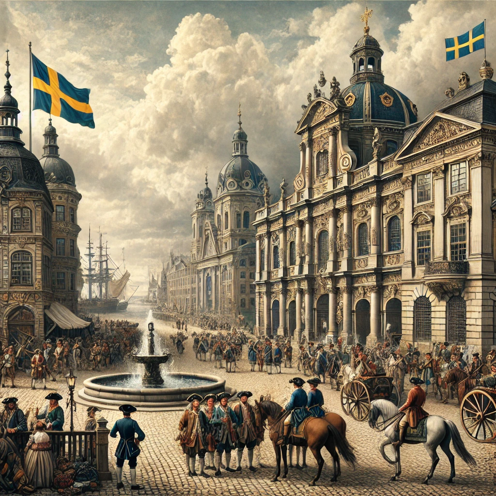

Stormaktstiden i Malmö:
Stormaktstiden (1611–1718) var en period av stor militär och politisk makt för Sverige, då landet under ledning av kungar som Gustav II Adolf och Karl XI etablerade sig som en av de största makterna i Europa. Malmö, som vid denna tid tillhörde Danmark, fick på många sätt stå i centrum för de konflikter som präglade den här perioden.
Under början av Stormaktstiden var Malmö en strategiskt viktig stad för det danska kungariket, både som en handelsstad och som en militär knutpunkt. Öresund, som skilde Sverige från Danmark, var en viktig väg för sjöfart och handel, och kontrollen över detta sund var en central fråga för de båda riken.
Den stora konflikten mellan Sverige och Danmark, som utbröt i samband med det trettioåriga kriget (1618–1648) och senare Karl X Gustavs krig mot Danmark, innebar att Malmö var en plats för strider och förändringar. När Karl X Gustav erövrade delar av Skåne, inklusive Malmö, i 1645 genom freden i Brömsebro, kom staden att tillhöra Sverige. Denna erövring markerade början på Malmös övergång från att vara en dansk till en svensk stad och satte också scenen för stadens vidare utveckling.
Barocken i Malmö:
Under barocken (1600-talets andra hälft och tidigt 1700-tal) präglades Malmö av en period av stark centralisering och ombyggnationer som följde på att staden blivit en del av det svenska riket. Barocken, som var en stil som betonade makt, härlighet och ordning, kom att påverka både stadsbyggande och det kulturella livet i Malmö.
Arkitektur och stadsplanering var starkt präglad av barockens ideal. Staden började få en mer organiserad och "rätlinjig" form, och det byggdes flera offentliga byggnader, såsom rådhus och kyrkor, i barockstil. Stortorget, som fortfarande är en central plats i Malmö, fick en mer framträdande roll som en symbol för den svenska staten. Många av de byggnader som fortfarande finns kvar i Malmö idag, som Malmöhus slott, som var en gång en kunglig fästning, och Sankt Petri kyrka, byggdes under denna period och är starkt influerade av barockens stil.
Kulturella förändringar:
Under barocken växte också den kulturella scenen i Malmö. Stadens status som en viktig handelsstad och en del av det svenska imperiet bidrog till en ökad rikedom och kulturellt utbyte. Kungliga besök, konstnärlig blomstring och en växande borgerlig klass var några av de förändringar som satte prägel på denna period. Musik, teater och konst fick större uppmärksamhet, och Malmö, som en del av det svenska riket, tog del av de europeiska strömningarna av barockens konst och kultur.
Stormaktstidens utmaningar:
Trots den politiska och kulturella utvecklingen var Stormaktstiden även en tid av svårigheter för Malmö och Skåne. Skånska krigen (1657–1679), där Danmark och Sverige var i konflikt om Skånes kontroll, innebar att Malmö drabbades av både förstörelse och ekonomiska svårigheter. De svenska styrkorna befäste sin kontroll över staden, och Malmö var en plats för flera militärstrategiska åtgärder.
Under Karl XI:s regeringstid, som påbörjades 1672, genomfördes en rad reformer som syftade till att stärka centralmakten och stabilisera den svenska ekonomin. Malmö, som nu var en del av Sverige, fick del av dessa förändringar, och stadens administration blev mer organiserad.
Sammanfattning:
Malmös historia under Stormaktstiden och barocken var en period av stora förändringar och utmaningar. Efter att staden övergått från att vara dansk till svensk 1645, blev Malmö en viktig del av det svenska riket. Stadens arkitektur och stadsbild förändrades i barockens stil, och Malmö blev en central plats både för handel och militär strategi. Samtidigt var perioden präglad av krig och politiska omvälvningar, särskilt de skånska krigen, som satte sin prägel på stadens utveckling.